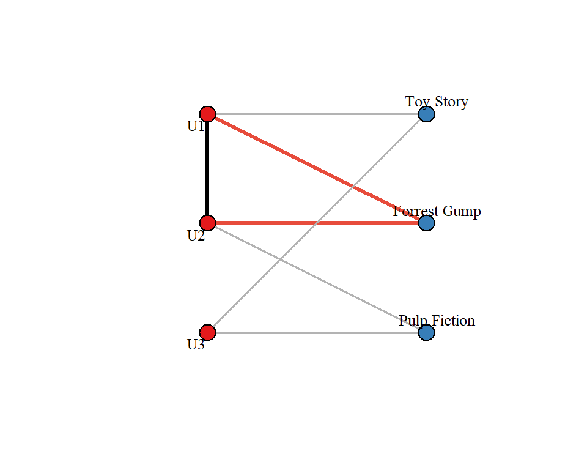
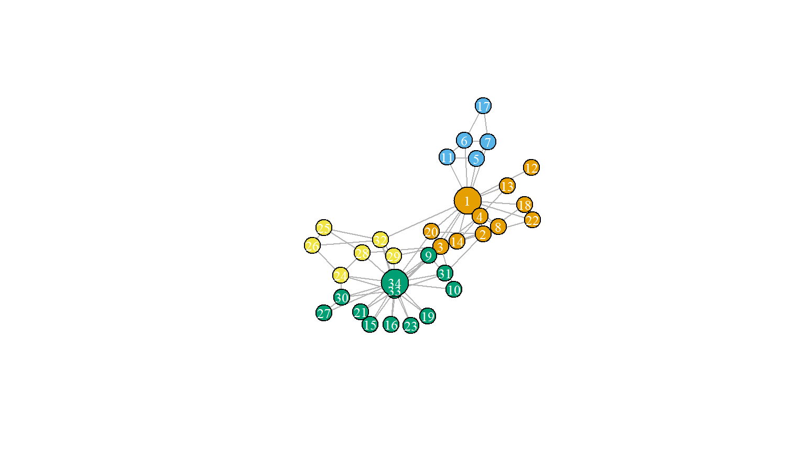
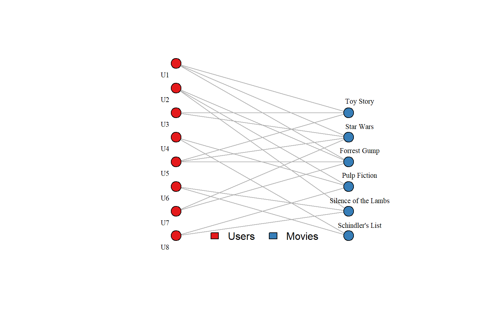
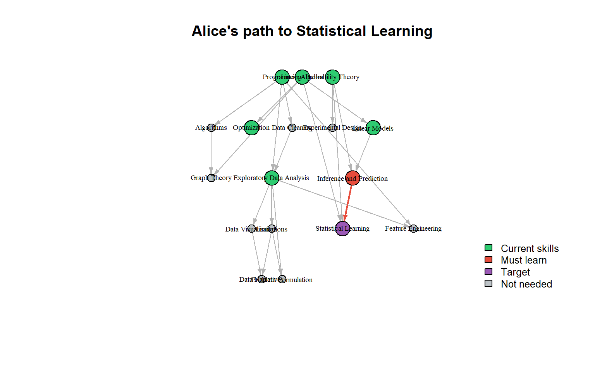

Graph Theory for Machine Learning
Structure, Connection, and Meaning
EDA for Machine Learning
The Nature of Graphs
Networks Are Everywhere
Graphs appear whenever entities are connected:
- Social networks: People linked by friendship, collaboration, influence
- Biological networks: Proteins linked by interactions, genes by regulation
- Information networks: Web pages linked by hyperlinks, papers by citations
- Knowledge graphs: Concepts linked by semantic relationships
The mathematical abstraction—nodes and edges—unifies these diverse domains.
Understanding and Prediction
Throughout this book we have seen that understanding and decision support are intertwined.
Graph analysis makes this especially vivid.
| Perspective | Question |
|---|---|
| Prediction | Which nodes will connect next? What should we recommend? |
| Understanding | What communities exist? Who is influential? Why? |
These perspectives are complementary—structure enables prediction, and prediction reveals structure.
The Questions Graphs Answer
Structural questions (understanding):
- What communities or clusters exist?
- Which nodes are central or influential?
- How does information or influence flow?
Predictive questions (decision support):
- Will these two nodes connect? (link prediction)
- What should this user see next? (recommendation)
- What’s the shortest path from here to there? (routing)
Three Examples
We explore graphs through three examples of increasing complexity:
| Example | Domain | Key Concepts |
|---|---|---|
| Zachary’s Karate Club | Social network | Community detection, centrality |
| MovieLens | Recommendations | Bipartite graphs, projection |
| LearningGraph | Knowledge graph | Typed nodes, path queries, gap analysis |
Each illuminates different aspects of graph structure and different analytical questions.
Example 1: Zachary’s Karate Club
The Story
In the 1970s, sociologist Wayne Zachary studied a university karate club.
A conflict arose between the instructor (Mr. Hi) and the club president (John A).
The club split. Zachary had recorded who interacted with whom outside the club.
The question: Could the social network predict which faction each member would join?
The Network

Figure 1: Zachary’s Karate Club network (34 members, 78 connections)
What the Network Reveals
Visual inspection already suggests structure:
- Two dense regions with sparse connections between them
- Node 1 (Mr. Hi) and node 34 (John A) are hubs of their respective groups
Zachary’s result: The network correctly predicted 33 of 34 members’ choices.
The one “misclassified” member (node 9) had stronger ties to Mr. Hi’s group but followed his close friend to John A’s faction.
Centrality: Who Matters?
Degree centrality: How many connections does a node have?
Betweenness centrality: How often does a node lie on shortest paths between others?

Figure 2: Karate Club with nodes sized by betweenness centrality
Node 1 (Mr. Hi) has highest betweenness—he’s the bridge to many members.
Community Detection
Can an algorithm recover the factions without knowing the ground truth?
Figure 3: Communities detected by Louvain algorithm
The Louvain algorithm finds a partition very close to the actual split.
Prediction Meets Understanding
The Karate Club illustrates the dual perspective:
Understanding: The network structure reveals social cohesion patterns. Communities exist because people preferentially associate with similar others.
Prediction: That same structure predicts future behavior. When forced to choose, people follow their network ties.
This is the power of graph analysis: structure is predictive because structure reflects mechanism.
Example 2: MovieLens
The Setting
MovieLens is a movie recommendation dataset from the GroupLens research lab.
The data: Users rate movies on a 1–5 scale.
The question: Given a user’s rating history, what movies should we recommend?
Bipartite Structure
Figure 4: A bipartite graph connecting users to the movies they rated.
Users and movies are different types of nodes. Edges connect users to movies they’ve rated.
The Recommendation Question
Collaborative filtering idea: Users with similar taste will like similar movies.
Graph formulation:
- If User A and User B both rated Movie X highly…
- …and User B also rated Movie Y highly…
- …then recommend Movie Y to User A.
This is a path query: find movies reachable through similar users.
Projection: User Similarity
We can “project” the bipartite graph onto users:
Two users are connected if they rated the same movie. This projection enables standard graph algorithms on user similarity.
From Structure to Prediction
Understanding: The projected graph reveals user clusters—groups with similar taste.
Prediction: Recommendations come from highly-connected neighbors in this similarity graph.
The insight: Recommendation is fundamentally about graph structure. Collaborative filtering asks: “What do my graph neighbors like that I haven’t seen?”
Example 3: LearningGraph
Knowledge Graphs
A knowledge graph represents structured knowledge:
- Nodes have types (Person, Skill, Course, Work-Role)
- Edges have labels (has_skill, requires, teaches)
- Properties attach to edges (proficiency level)
This is richer than a simple network: it encodes semantics.
The LearningGraph
| Node Types | Edge Types |
|---|---|
| Learner (6) | has_skill (learner → skill) |
| Skill (18) | requires_skill (role → skill) |
| Work Role (3) | prerequisite (skill → skill) |
| Course (15) | teaches (course → skill) |
| Competency (7) | skill_in_competency (skill → competency) |
Based on the IC Data Science Competency Resource Guide (2023).
Inspired by Workera.ai’s skills-intelligence platform.
The Schema
| Edge Type | Source | Target | Property | Semantics |
|---|---|---|---|---|
| has_skill | learner | skill | proficiency | current level |
| requires_skill | work_role | skill | proficiency | minimum threshold |
| prerequisite | skill | skill | — | conceptual dependency |
| teaches | course | skill | proficiency | maximum ceiling |
The schema defines what assertions are well-formed—enabling both validation and inference.
Skill Prerequisites as a DAG

Figure 6: Skills dependent on prerequisite skills, a Directed Acyclic Graph (DAG). Note: Courses teach these skills but may bundle them differently.
Entry point skills: Programming, Data Collection, Probability Theory, Linear Algebra
Gap Analysis
Question: What skills does Alice need to become a Data Scientist?
| Skill | Current | Required | Gap |
|---|---|---|---|
| Exploratory Data Analysis | 1 | 3 | 2 |
| Inference and Prediction | 0 | 2 | 2 |
| Statistical Learning | 0 | 2 | 2 |
| Feature Engineering | 0 | 2 | 2 |
| Problem Formulation | 0 | 2 | 2 |
| Data Narratives | 0 | 2 | 2 |
| Limitations | 0 | 2 | 2 |
| Programming | 1 | 2 | 1 |
Learning Paths: From Profile to Goal
A learning path isn’t simply a route from one skill to another.
Realistically, it’s a path from a learner’s current skill profile to a target skill profile.
Alice’s question: Given everything I already know, what’s the shortest path to Statistical Learning?
| Skill | Proficiency |
|---|---|
| Exploratory Data Analysis | 1 |
| Linear Algebra | 3 |
| Linear Models | 2 |
| Optimization | 2 |
| Probability Theory | 3 |
| Programming | 1 |
Computing the Learning Path
Skills Alice must acquire:1. Inference and Prediction
2. Statistical LearningThe algorithm finds all missing prerequisite skills and returns them in a valid learning order.
Why This Isn’t Exponentially Complex
Concern: “There are too many possible skill profiles!”
Resolution: We don’t search profile space—we search the prerequisite DAG.
| Approach | Search Space | Complexity |
|---|---|---|
| All profiles | \(2^{|skills|}\) | Exponential |
| DAG from current profile | Ancestors of target | \(O(V + E)\) |
Alice’s profile defines her frontier, the skills adjacent to her current skill profile. We only traverse from there to the target.
Visualizing the Path
Figure 7: Alice’s learning path to Statistical Learning
Green = skills Alice has. Red = skills to acquire. Purple = target.
Different Profiles, Different Paths
| Learner | Steps Required |
|---|---|
| Alice | 2 |
| Beth | 3 |
| Charlie | 0 |
| Dan | 1 |
Key insight: Learning paths are properties of learner-skill pairs, not skills alone.
The DAG of prerequisite skills is fixed; the learner’s position on it varies. The path to Statistical Learning doesn’t exist—only Alice’s path, Bob’s path, Carol’s path.
The Algorithm
lg_learning_path <- function(lg, learner_id, target_skill) {
# 1. Get learner's current skills
current <- get_learner_skills(lg, learner_id)
# 2. Find all ancestors of target (transitive prerequisites)
ancestors <- igraph::subcomponent(prereq_graph, target, mode = "in")
# 3. Filter to skills learner doesn't have
missing <- setdiff(ancestors, current)
# 4. Return in topological order (valid learning sequence)
igraph::topo_sort(igraph::induced_subgraph(missing))
}This is graph reachability, not combinatorial search.
Real-World Application: Workera
This isn’t hypothetical. Companies like Workera (co-founded by Kian Katanforoosh, with Andrew Ng as chairman) have built businesses on exactly this structure.
| Workera Capability | Graph Interpretation |
|---|---|
| 3,000+ micro-skills | Fine-grained skill nodes |
| Personalized learning paths | Shortest path through prerequisites |
| Skill gap assessment | Compare current vs. required subgraphs |
| “Sage” AI mentor | LLM grounded by knowledge graph |
The Dual Perspective Again
Understanding: The knowledge graph encodes domain expertise—what skills exist, how they relate, and the work-roles that require them.
Prediction/Decision Support: Given where a learner is, what should they learn next? What’s the most efficient path to their goal?
This knowledge graph goes beyond storing knowledge; it enables reasoning about learning paths.
With these examples as motivation, we now turn to the formal concepts underlying graph analysis.
Fundamental Concepts
Nodes and Edges
A graph \(G = (V, E)\) consists of:
- \(V\) = set of vertices (nodes)
- \(E\) = set of edges (connections between nodes)
Undirected: Edge \(\{u, v\}\) is symmetric (friendship)
Directed: Edge \((u, v)\) has direction (follows, links to)
Weighted: Edges carry numerical values (distance, strength)
Labeled: Edges have types (prerequisite, teaches, knows)
Matrix Representations
The adjacency matrix \(A\) encodes connections:
\[A_{ij} = \begin{cases} 1 & \text{if edge } (i,j) \in E \\ 0 & \text{otherwise} \end{cases}\]
The degree matrix \(D\) is diagonal:
\[D_{ii} = \sum_j A_{ij} = \text{degree of node } i\]
The Laplacian \(L = D - A\) has deep connections to graph structure.
Paths and Connectivity
A path is a sequence of edges connecting two nodes.
Shortest path: The path with minimum total weight (or fewest edges).
A graph is connected if a path exists between every pair of nodes.
Connected components: Maximal connected subgraphs.
A directed acyclic graph (DAG) has no cycles—crucial for prerequisite structures.
Measuring Importance
Centrality: Who Matters?
Different questions → different centrality measures:
| Measure | Question | Karate Club Leader |
|---|---|---|
| Degree | Who has the most connections? | Mr. Hi |
| Betweenness | Who controls information flow? | Mr. Hi |
| Closeness | Who can reach everyone quickly? | Central members |
| PageRank | Who is endorsed by important others? | Both leaders |
Betweenness Centrality
\[\gamma(v) = \sum_{s \neq v \neq t} \frac{\sigma_{st}(v)}{\sigma_{st}}\]
where \(\sigma_{st}\) = number of shortest paths from \(s\) to \(t\)
and \(\sigma_{st}(v)\) = number of those paths passing through \(v\)
Interpretation: Nodes with high betweenness are bridges—removing them fragments the network.
PageRank
Originally for ranking web pages. The idea:
A page is important if important pages link to it.
Random surfer model: Follow links randomly, occasionally jump to a random page. PageRank = long-run fraction of time at each node.
\[\text{PR}(v) = \frac{1-d}{N} + d \sum_{u \to v} \frac{\text{PR}(u)}{\text{out-degree}(u)}\]
where \(d \approx 0.85\) is the damping factor, and out-degree counts out-going edges.
Finding Structure
Communities
A community is a group of nodes more densely connected internally than externally.
Modularity \(Q\) measures community quality by comparing actual edges to expectation:
\[Q = \frac{1}{2m} \sum_{ij} \left[ A_{ij} - \frac{k_i k_j}{2m} \right] \delta(c_i, c_j)\]
where \(m\) = total edges, \(k_i\) = degree of node \(i\), and \(\delta(c_i, c_j) = 1\) if \(i, j\) share a community.
\(Q > 0.3\) typically indicates significant community structure.
Community Detection Algorithms
| Algorithm | Approach | Complexity |
|---|---|---|
| Girvan-Newman | Iteratively remove high-betweenness edges | Slow, interpretable |
| Louvain | Greedily optimize modularity | Fast, widely used |
| Spectral | Eigenvectors of Laplacian | Principled; minimizes edges between groups |
| Leiden | Improved Louvain, allows overlaps | State of the art |
No single “best” algorithm—choice depends on graph size, structure, and goals.
Spectral Clustering Intuition
The graph Laplacian \(L = D - A\) encodes connectivity.
Its eigenvectors reveal structure:
- First eigenvector: constant (trivial)
- Second eigenvector: signs indicate two-way partition
- More eigenvectors: finer partitions
Fiedler vector (second eigenvector) provides a principled way to split a graph.
Graphs and Machine Learning
Graphs as Feature Sources
Traditional ML on graphs: extract features, then apply standard ML methods to features.
Node features:
- Degree, centrality measures
- Community membership
- Local clustering coefficient
Graph features:
- Density, diameter
- Degree distribution
- Modularity
Link Prediction
Question: Which pairs of unconnected nodes will connect in the future?
Common neighbors: \(|N(u) \cap N(v)|\)
Jaccard coefficient: \(\frac{|N(u) \cap N(v)|}{|N(u) \cup N(v)|}\)
Adamic-Adar: \(\sum_{w \in N(u) \cap N(v)} \frac{1}{\log |N(w)|}\)
These are graph-derived features for a classification problem.
GNN: Graph Neural Networks (Brief)
Modern approach: learn node representations directly from graph structure.
Message passing: Nodes aggregate information from neighbors, iteratively.
\[h_v^{(k+1)} = \text{UPDATE}\left(h_v^{(k)}, \text{AGGREGATE}\left(\{h_u^{(k)} : u \in N(v)\}\right)\right)\]
GNNs can learn features automatically—but require substantial data and compute.
For many problems, classical graph features be preferred: easier to interpret, and less compute-intensive.
The Dual Perspectives Revisited
Structure Enables Both Goals
| Perspective | Methods | Questions |
|---|---|---|
| Understanding | Centrality, communities, components | Who matters? What groups exist? How does information flow? |
| Prediction | Link prediction, recommendation, node classification | What will happen? What should we recommend? |
The same graph structure serves both: understanding why and predicting what.
From Social to Semantic
Our three examples show increasing semantic richness:
| Example | Nodes | Edges | Semantics |
|---|---|---|---|
| Karate Club | People | Interacts | Homogeneous |
| MovieLens | Users, Movies | Rates | Bipartite, weighted |
| LearningGraph | Learners, Skills, Roles, Courses | Multiple types | Knowledge graph |
Richer semantics → richer reasoning, but also more complex modeling.
Key Takeaways
Graphs encode relationships—and relationships are information.
Structure reveals mechanism—communities exist because of homophily; centrality reflects influence pathways.
The same structure serves prediction and understanding—predicting future connections exploits the patterns that community detection reveals.
Knowledge graphs add semantics—typed nodes and labeled edges enable richer queries and reasoning.
Summary and Resources
What We Covered
- Three examples: Karate Club, MovieLens, LearningGraph
- Fundamental concepts: Nodes, edges, matrices, paths
- Centrality measures: Degree, betweenness, PageRank
- Community detection: Modularity, Louvain, spectral methods
- ML connections: Graph-derived features, predicting new edges, GNNs
Key R Packages
| Package | Purpose |
|---|---|
igraph |
Graph creation, algorithms, analysis |
tidygraph |
Tidy interface to igraph |
ggraph |
ggplot2-style visualization |
igraphdata |
Built-in datasets |
Resources
Textbooks:
- Newman, Networks (2nd ed., 2018) — comprehensive reference
- Barabási, Network Science (2016) — free online, beautifully illustrated
- Easley & Kleinberg, Networks, Crowds, and Markets (2010) — interdisciplinary
Tutorial:
- Ognyanova, “Network Visualization with R” (kateto.net)
Exercises
Team Exercise 1: Karate Club Centrality
Load the Karate Club network using igraph::make_graph("Zachary"):
- Compute betweenness centrality for all nodes.
- Which node has the highest betweenness?
- Why does this make sense sociologically—what role does this node play?
- Compare to degree centrality. Do the rankings agree?
Team Exercise 2: Community Detection
Apply the Louvain algorithm (igraph::cluster_louvain()) to the Karate Club:
- How many communities does it find?
- Compare the detected communities to the known faction split (Mr. Hi vs. John A).
- Which nodes, if any, are “misclassified”? Why might this be?
- Try Walktrap (
igraph::cluster_walktrap()). Do the results differ?
Team Exercise 3: LearningGraph Exploration
Install eda4mldata from GitHub and load learning_graph:
- Build the skill prerequisite graph from
learning_graph$edges$prerequisite. - Verify that it is acyclic. What would a cycle mean pedagogically?
- Find the skill with the most prerequisites (highest in-degree).
- Find the skill that is prerequisite to the most others (highest out-degree).
Team Exercise 4: Bipartite Projection
Create a bipartite graph: students × courses they’ve taken.
- Alice: Math, Stats, Programming
- Bob: Stats, Programming, ML
- Carol: Math, Stats
- Dan: Programming, ML
- Project onto students (edges connect students sharing courses).
- What are the edge weights? Which pair is most similar?
- Project onto courses. What does an edge between two courses mean?
- When is bipartite projection useful in practice?
Discussion Questions
Social networks, citation networks, and neural networks are all called “networks.” What do they share? How do they differ?
When would betweenness centrality be more informative than degree centrality?
How do graph-derived features differ from tabular features for machine learning?